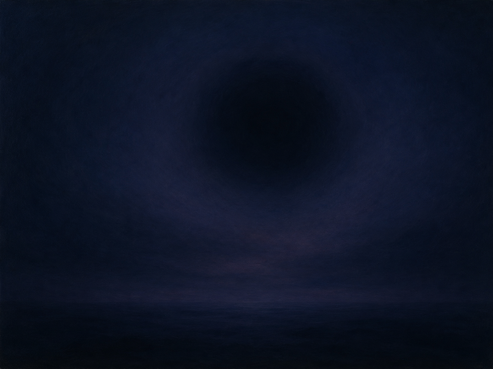

Weil auf mir, du dunkles Auge,
全诗最容易被误读的一行。Weil 在此不是连词"因为"，而是动词 weilen（停留、逗留）的第二人称单数命令式！整句意为"停留在我身上吧"。正因为易混，不少版本（如 Reclam 1883 年版）印作带省字符的 "Weil'"。若把它读成"因为"，全诗立刻不通——这是德语阅读中著名的陷阱之一。
祈求
《诗集》·第一卷·「渴望」（Sehnsucht）辑
浪漫主义晚期 / 毕德麦耶
1832年前后作，1832年收入《诗集》

图片由 AI 生成
Weil auf mir, du dunkles Auge,
全诗最容易被误读的一行。Weil 在此不是连词"因为"，而是动词 weilen（停留、逗留）的第二人称单数命令式！整句意为"停留在我身上吧"。正因为易混，不少版本（如 Reclam 1883 年版）印作带省字符的 "Weil'"。若把它读成"因为"，全诗立刻不通——这是德语阅读中著名的陷阱之一。
Übe deine ganze Macht,
第二个命令式。üben 在此取"施行、行使"义（Macht üben = 行使力量），而非日常的"练习"；今日更常说 ausüben。注意呼语对象 "du dunkles Auge" 已在上一行出现，因此这里的命令式是对"眼睛/夜"说的。
Ernste, milde, träumerische,
三个形容词并列，全部是阴性单数第一格的弱变化形式（因为它们修饰下一行的 Nacht，并与其构成一个巨大的后置呼语）。整整一行只有形容词而没有中心词，读者必须读到下一行才知道它们在修饰什么——这种悬置正是全诗紧张感的来源。此行另有版本作 "Ernste, milde, zauberische" 等，属作曲家改动，详见校对记录。
Unergründlich süße Nacht!
呼语的中心词终于出现：Nacht（夜）。此处发生了一次意象的合并——第1行称之为"幽暗的眼睛"，第4行揭示它同时也是"夜"。unergründlich（深不可测的）由 un- + ergründen（探究到底）+ -lich 构成，字面为"无法探到底的"。süß（甜美的）与前面的 ernst（肃穆）构成温柔的矛盾。
Nimm mit deinem Zauberdunkel
第三个命令式（nehmen 的第二人称单数命令式 nimm，词干变元音 e→i）。das Zauberdunkel（魔法般的幽暗）是莱瑙自造的复合词，由 Zauber（魔法）+ Dunkel（幽暗，中性名词）构成。
Diese Welt von hinnen mir,
语序需要还原：Nimm mir diese Welt von hinnen = "把这个世界从我这里拿走"。mir 是"利益/损失第三格"（Dativus incommodi），表示动作涉及的人。von hinnen 是古语，意为"从此处离开"（今存于 "von hinnen gehen" = 去世）。
Daß du über meinem Leben
daß（今 dass）引导目的从句（"以便、好让"），从句动词后置于下一行末尾。über + 第三格（meinem Leben）表示静态的位置"在……之上"——与表方向的第四格区分。
Einsam schwebest für und für.
schwebest 是 schweben（悬浮）的诗歌延长形式（今 schwebst）。für und für 是古老的固定表达，意为"永远、绵绵不绝"（今日已废，可对照英语 for ever and ever）。全诗以"孤独地悬浮"作结：说话者祈求的不是解脱，而是被这片幽暗永久地笼罩——这是莱瑙式忧郁最典型的姿态。
| Infinitiv | Präsens 3. Sg. |
Präteritum | Perfekt | Partizip II | Konjunktiv II | Hilfsverb |
|---|---|---|---|---|---|---|
| weilen | weilt | weilte | hat geweilt | geweilt | weilte | haben |
| ↳ 诗中第二人称单数命令式 Weil（部分版本印作 Weil'）；命令式省去词尾 -e 是弱变化动词的常规选项。 | ||||||
| üben | übt | übte | hat geübt | geübt | übte | haben |
| ↳ 诗中命令式 Übe（保留词尾 -e）；同一首诗中 Weil（无 -e）与 Übe（有 -e）并存，取决于音节数。 | ||||||
| nehmen | nimmt | nahm | hat genommen | genommen | nähme | haben |
| ↳ 强变化，现在时单数变元音 e→i 且辅音变化；命令式随之作 nimm!（不加 -e），这是变元音类强变化动词的固定规则（gib!, sieh!, iss!, hilf!）。 | ||||||
| schweben | schwebt | schwebte | hat/ist geschwebt | geschwebt | schwebte | haben（表状态）／sein（表位移） |
| ↳ 诗中第二人称单数延长形式 schwebest（今 schwebst），位于 daß 从句末尾。 | ||||||
Weil auf mir … / Übe deine ganze Macht … / Nimm mit deinem Zauberdunkel …
Weil auf mir, du dunkles Auge,
Ernste, milde, träumerische, / Unergründlich süße Nacht!
Nimm mit deinem Zauberdunkel / Diese Welt von hinnen mir,
《祈求》是莱瑙最著名的短诗，收在1832年《诗集》第一卷的「渴望」一辑中。莱瑙（本名 Nikolaus Franz Niembsch Edler von Strehlenau）出生于今匈牙利境内的德意志家庭，1832年曾赴美国购置土地、试图定居，很快失望而归；晚年患精神疾病，1844年后完全丧失创作能力，1850年去世。他的诗以浓重的忧郁著称，德语中甚至有 "Lenau-Ton"（莱瑙调）之说。
这首诗只有八行，却完成了一次意象的合并：开篇呼唤的是"幽暗的眼睛"（du dunkles Auge），到第四行读者才发现，这只眼睛同时就是"夜"。这一双关使全诗可以有至少两种读法：一是把它当作情诗，对着一双深色的眼睛说话；二是把它当作对夜、对遗忘、乃至对死亡的祈求。莱瑙本人没有给出答案，两种读法在诗中始终并存。
值得注意的是全诗的祈求内容：说话者要的不是安慰，也不是解脱，而是"把这个世界从我这里带走"，并且要那片幽暗"孤独地永远悬浮"在自己的生命之上。这不是从忧郁中求救，而是请求忧郁长久驻留——这种姿态是理解19世纪"世界痛苦"（Weltschmerz）的一把钥匙。
此诗被谱曲的次数惊人，LiederNet 收录的作曲家超过二十位，其中包括罗伯特·弗朗茨、卡尔·勒韦、法妮·亨泽尔（门德尔松之姊）、马克斯·雷格、卡尔·奥尔夫，以及美国作曲家查尔斯·艾夫斯（1902年，同时另有英文版）。有几位作曲家还改动了第3行的形容词（如"zauberische""träumereiche"），可见这一行在演唱时的难度。
中文译文为本站学习译文（AI 辅助），采用直译。最关键的一处是首行的 Weil：它是动词 weilen（停留）的命令式，而非连词"因为"，译文作"停留在我身上吧"，详见逐行注释与语法要点——这是本诗翻译中不容出错的一点。第二处需说明的是第6行的 mir（损失第三格），译文作"从我这里"，而非"给我"。第3—4行的长呼语在中文中难以保持悬置效果，译文以四个并列修饰语加句末的"夜"近似传达。已知此诗存在钱春绮等译者的中译本，因版权原因本站不转载具体译本全文。
德文正文通过两个独立来源（Zeno.org 转录的 Insel 版《莱瑙全集与书信》第1卷第17页，与 LiederNet 依 Reclam 1883 年版转录的文本）逐词核对，两节各四行、内容完全一致。核实到的差异如下：(1) 首行写法：主来源作 "Weil"，LiederNet 依 Reclam 版作 "Weil'"（带省字符）。两者是同一个词——动词 weilen 的命令式——省字符只是编者为与连词 weil 消歧而加。本站从主来源的无省字符写法，并在逐行注释与语法要点中重点说明这一同形陷阱。(2) 第3行的异文：LiederNet 明确记录了三处作曲家改动——博尔科·冯·霍赫贝格作 "Ernste, milde, zauberische"，舍格伦作 "Ernste, milde, träumereiche"，施蒂希作 "Träumerische, ernste, milde"。这些均属谱曲时的改词而非文本异文，本站不采，仅在此记录。(3) 正字法：Daß 为旧拼法，今作 dass；本站保留主来源写法。需说明的是，本站未直接查阅1832年《诗集》初版影印件，创作年代与辑目归属依据主来源的编排，属待进一步核实项。